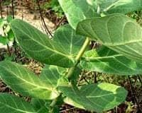

ဆေးဖက်ဝင် မုရိုးပင်

အရိုးတစ်ချောင်းမှာ အရွက်က တစ်ဖက်တစ်ချက် ထွက်ပြီး အကိုင်းဖျားအထိ အရွက်က အစိမ်းရောင်ရင့်ရင့်၊ အမွှေးနုပါတဲ့ဖက်က အဖြူရောင်ဖက်ကို နဲနဲယိမ်းပါတယ်။
အသီးက စိမ်တစ်လုံး သရက်လို ပုံသဏာ္ဌန်ရှိတယ်။ ဒါပေမဲ့ အထဲမှာက လေအပွသီး ဝတ်ဆံအနက်နဲ့၊ အမွှေးမျှင်မျှင်တွေ လေမှာပျံပြီး မျိုးပွားတယ်။ ACID ဓါတ်များပါတယ် ကျွဲမရိုးလည်း ခေါ်တယ် တောင်မရိုးပင်လည်း ခေါ်တယ်။
အညာဒေသမှာတော့ မရိုးပင်လို့ ခေါ်ပါတယ်။ ကျွဲပေါက်ပင်လို့လည်း ခေါ်ပါတယ်။ ရခိုင်ဒေသမှာ မုရိုးပင်ကို ဖြူကြီးပင်လို့ခေါ်တယ်။ ငဖြူ ကြီးပင်လို့လည်းခေါ်ပါတယ်။ ပြည်ဘက်မှာတော့ နွားဖြူကြီးပင်(နွားနို့ခဲ) အပင်လို့ ခေါ်ပါသည်။
#ဒူးနာ ခါးနာဖြစ်ရင် အရွက်ကို ရေနဲ့ သေချာဆေးပါ။ ပြီးတော့ အရွက်ကို မီးကင်ပြီး၂ည ၃ည ပတ်စီးပေးရင် ယူပစ်သလို ပျောက်ပါတယ်။
#ခြေထောက်ခေါက်လဲလို့ မျက်သွားပြီး ယောင်ကိုင်းနေရင် မုရိုးစေးကို အသာလေး ပွတ်လိမ်းပေးပြီး အရွက်ကို မီးကင် လက်လေးနဲ့ အသာလေးချေ အပြန့်လိုက် ကပ်ပြီး ပိတ်စနဲ့ စည်းထားလိုက်ပါ။
#လေးဘက်နာပျောက်တယ်။ အပင်ရော အမြစ်ပါမကျန် နူတ်ပြီး အိုးထဲမှာထည့်၊ အပေါ်ကနေ ဆေးရွက်ကြီးအုပ်၊ ရေထည့်ပြုတ်ပါ။ အဲဒီရေကို ချိုးပေးပါ။ နောက်တနည်းကတော့ မရိုးအမြစ်နဲ့ ဆန်ဆေးရည် သွေးပြီးလိမ်းရင်လည်း အဆစ်အမြစ်ရောင် လေးဖက်နာ ပျောက်ပါတယ်။
#ကြွွက်နို့ကိုဖြတ်ပြီး အစေးနဲ့ တို့ထားရင် အမြစ်ပါစားပြီး ကျင်းခွက်လိုဖြစ်သွားတယ်။ ပြီးတော့ ပျောက်သွားတယ်။
#ငါးမျက်စိပေါက်နေသူများ မုရိုးရွက်ကို ချိုးလိုက်တဲ့အခါ ထွက်လာသော အစေးနဲ့ ခဏခဏ တို့ပေးပါ။ အလိုလို ထွက်ကျလာမည်။
#ခြေထောက်မှာဝတ်ဆံတည်တာကို ခြေပူနာလို့ ခေါ်ပါသည်။ ကြက်ဆူး ထည့်သွားပြီဆိုရင် ခဲနင်းမိပါက အမလေး တရတဲ့ အနာပါ။ အနာထိပ်ကို ဓားနှင့်လှီးပြီး အစေးက်ို သုတ်လိမ်းပေးပါက ပျောက်ပါသည်။
#အမျိုးသမီးများ သားအိမ်အတွင်း သွေးလုံး လေလုံးဖြစ်ခဲ့ပါလျှင် မုရိုး၅ပွင့်ကို နှမ်းဆီနှင့်ကြော်စား၊ ဝမ်းဗိုက်ကို မုရိုးစေးနှင့် ဆနွင်းမှုန့် ဆတူရောစပ် လိမ်းပေးပါက တဖြည်းဖြည်း သေးငယ်ပြီး သက်သာ ပျောက်ကင်းစေပါတယ်။
#ဓမ္မတာ မမှန်တာ သွေးမပေါ်တာ ဆိုရင် အရည်ညှစ်ပြီး နှစ်ခေါင်းထဲကို တစ်စက်ဆီ ထဲ့ပေးပါ။ သွေးချက််ချင်း ဆင်းပါတယ်။
#ရင်ကြပ် ပန်းနာရောဂါ ပျောက်ပါတယ်။ မရိုးပင်ကို ၃လက္မ လောက်ဖြတ်ပြီး နေလှမ်းပါ။ ခြောက်သွေ့တဲ့အခါ မီးရှို့ပြာချပါ။ ပြာကို ရေစိမ် မွှေပေးပြီး အနယ်ထိုင်ရင် အရေကြည်ကို ဆားချက်ပါ။ မုရိုးကြီးရုက္ခမူ ဆားရမယ်။ အဲဒီဆား တစ်ပဲသားကို ပျားရည် တစ်ဆယ်သားနဲ့ ရောသမမွှေ သုံးဆောင်ပါ။
#ဆူးစူးပြီးဆူးကိုထွင်လို့မရတဲ့အခါ ဒီအပင်ရဲ့ အစေးကို ထည့်လိုက်ပါ။ နာရီအနည်းငယ် ကြာတဲ့အခါ ဆူးက သူ့အလိုလို အပြင်ကို ထွက်လာပါတယ်။ ဆူးစူးပြီး အနာဝပိတ်သွားလို့ ဆူးကျန်ပြီး အထဲကနာနေလျှင်လည်း အနာဝကို ဖွင့်ပြီး အစေးချ အရွက်မီးကင် ကပ်လိုက်တာ ညောင့်ထွက်လာပါ်ပါတယ်။
တခြေထောက်မှာ ဆူးစူးလို့ ရှာမရဖြစ်နေရင် အစေးကို အနာဝပေါ်တို့ပြီး အရွက်ကို မီးကင်ကပ်ရင် ဆူးထွက်ပါတယ်။ ပတ်တီးဖွဖွလေးစည်းထားရင်လည်း အဆင်ပြေပါတယ်။ ကန္တာရဆူး စူးပြီး တော်တော်နာနေတာ အပ်နဲ့ ကော်ထုတ်လဲ မရပါ။
အသိတစ်ယောက်ကပြောလို့ မုရိုးအစေးနဲ့ ကပ်လိုက်တာ နောက်နေ့ အနာကိုညှစ်လိုက်တော့ ဆူးပါသွားတယ်။
#ချောင်းဆိုး တီဘီ အဆုတ်နာ မုရိုးရွက် တစ်ရွက်၊ ကွမ်းရွက်တစ်ရွက်၊ ဆားအနည်းငယ်ထည့်ပြီး ပြာချပါ။ အဲဒီပြာကို လျှက်ဆားလို တစ်နေ့ အနည်းငယ် လျှက်ပေး ပါ ပျောက်ပါတယ်။
#အနာစိမ်း မွှေးကျွတ်နာ အနာလုံးများ ပေါက်ရင် အနာပေါ်မှာ အရွက်ကို မီးလေးပြပြီး ကပ်ထားပါက အလျှင်အမြန် ပျောက်ကင်းပါသည်။
#ထိပ်ကပ်နာ ခေါ်တဲ့ နှာပိတ်ရောဂါကို မရိုးအစေးဖြူလေး နှာခေါင်းထိပ်ထဲ ထည့်ပေးပြီး ၁ဝမိနစ်လောက်နေရင် နှာဆက်တိုက်ချေပြီး နှပ်ပုတ်များ ထွက်လာကာ သက်သာ ပျောက်ကင်းပါသည်။
ထိတ်ခတ်နာကို အရွက်ကိုနေလှန်း ဆေးလိပ်လိုလိပ်၍ မီးရှို့ပြီး ရှူပါ။ ပြီးတော့ နှာခေါင်းမှ ပြန်ထုတ်ပါ။ ပျောက်ကင်းပါသည်။ ထိပ်ခတ်နာ နားခေါင်းယားလျှင် အရွက်ကို ချေပြီး ရှူ ပေးပါ။ မရုုိးရွက်ကို အခြောက်လှမ်း ဆေးလိပ်တွင် ထည့်ကာ မီးခိုးကို ရှူပါက နှာရည်များကျကာ ပွင့်သွားပါသည်။
တစ်သက်လုံး မယားတော့ပါ။ နှာခေါင်းပိတ်(ထိပ်ကပ်နာ) အသက်ရှူကြပ်ရောဂါရှိသူများ မရိုးရွက်မီးကင်ကို နှာခေါင်းအတွင်းမော့၍ ညှစ်ထည့်ပါ။
ခဏအကြာတွင် နှာချေ၍ နှာခေါင်းအတွင်းမှ အဝါရောင် အညစ်ကြေးများ ထွက်လာပြီး လုံးဝကောင်းသွားပါမည်။ ဆေးလိပ် အသောက်များသူများ မရိုးအရိုးအခြောက်ကို ဆေးလိပ်သောက်သကဲ့သို့ တစ်ဖက်မှမီးရှို့၍ တစ်ဖက်မှရှူပေးလျှင် ဆေးလိပ်ချိုး ချေးများ ပြန်အန်ထွက်လာပါလိမ့်မည်။
နှာခေါင်း ခဏခဏ ပိတ်ရင် မုရိုးရွက် အခြောက်ကို မီးခဲပေါ်တင် ရှူပါက သက်သာတယ်။ မုရိုးခေါ် မရွေး တစ်နည်း ဖြူကြီးရွက် ၇ - ရွက် ဖင်ပြန် ခေါင်းပြန် ထပ်ပါ။ ထပ်ပြီးရင် ကတော့ထိုးပါ။
ကတော့ထဲမှာ ဆားထည့်ပြီး မီးဖြင့်ဖုတ်ပါ။ ရလာသော ဆားမီးဖုတ်ကို တစ်နေ့ သုံးကြိမ် ရွေးစေ့ငယ်ခန့် လျှက်ပေးပါက ပန်းနာရင်ကြပ် လုံးဝ အမြစ်ပြတ် ပျောက်ပါတယ်။ တစ်လလောက် သီးခံလျှက်ပေးပါ။
အစာအိမ်ရောဂါ ဖြစ်ပါက မုရိုးရွက် တစ်ရွက်ကို အရင်းအဖျား စတိပယ်ပါ။ ရှောက်ရွက် ခုနစ်ရွက်၊ အိမ်သုံးဆား ခုနစ်ကျပ်သား ရောပြီး အိုးထဲထည့် အလုံပိတ် မီးဖုတ်။ ပြာကျ သွားပါက အစာစားပြီးတိုင်း လျှက်ပေးပါ။ ပျောက်ကင်း၏။
#သွားကိုက်ရင် သွားအခေါင်းထဲကို ဂွမ်းစလေးနဲ့ သူ့အစေးကိုတို့ပြီး သိပ်ထားပါ။ ခဏနဲ့ ပျောက်ပါတယ်။
#သွားအခြေကို အစေးတို့ပြီး ငါးမိနစ်ခန့်အကြာမှာ အဲဒီသွားကိုနှုတ်ရင် အလွယ်တကူ ကျွတ်ပါတယ်။ အသံမထွက်တဲ့ လူများ အသံ ထွက်လာပါလိမ့်မယ်။ ဆေးနည်းကတော့ အရွက်ကို ခြောက်အောင်နေလှမ်
းပါ။ ခြောက်တဲ့အရွက်ကို မီးကင်ပါ။ ပြာဖြစ်အောင် ကင်ရမှာပါ။ အဲဒီကင်ပြီးသား အရွက်ကို အမှုန့်ကြိတ်ပြီး ပျားရေနဲ့ နယ်ကာ လက်ဖက်စားဇွန်းနဲ့ တစ်နေ့ သုံးကြိမ် နံနက် နေ့ ညနေ စားပေးပါ။
၃လကြာရင် အသံထွက်လာပါမယ် (မွေးရာပါ စကားမပြောနိုင်တဲ့ လူများ မပါပါ။) မြင်းစဂုံနီမြစ် မရိုးမြစ် မိုးနံမြစ်တို့ကို သွေးပြီး လိမ်းပါက အနာမျိုးစုံပျောက်ပါသည်။
သံနဲ့ ထိခိုက်မိရင် ချက်ချင်း သူရဲ့ အစေး အဖြူရောင်ကို အနာမှာထည့်ပါ။လေဖြတ် လေငန်းရောဂါ ဖြစ်လျှင် ၄င်းအပင်ကို
ပဥ္စငါးပါး နုတ်နုတ်စင်းပါ။ ပြီးတော့ နှမ်းဆီ (သို ့)မုန် ့ညှင်းဆီဖြင့် ရောနယ်ပါ။နယ်ပြီးသားကို အဝတ်စ သန့်သန့်နဲ့ ထုပ်ပါ။အဲဒီ အထုပ်ကို မီးပူပေးထားတဲ့ အိုးအထက်မှာ ရေနွေးငွေ့ ့ပေါင်းခံကာ
ကြပ်ထုပ်ပြုလုပ်၍ လေဖြတ်သော နေရာအား ကြပ်ထုပ်ထိုးပေးပါ။မွေးကင်းစကလေး ၁လ ၂လ ကလေးများ ချွဲကြတ်နေလျှင် မရိုးရွက်ကို နွမ်းရုံမီးကင် နှမ်းဆီ စစ်စစ်နဲ့ မရိုးရွက်ပေါ်မှာ လူးပါ။ပြီးတော့ ရင်ဘတ်ပေါ် ကပ်ပေးပါ။ ပျောက်ပါတယ်။
#ခေါင်းကိုက်ရင်
နားထင်မှာ အပ်လေးနဲ့ သွေးစို့ရုံ ဖေါက်ပြီး မရိုးအစေးကို တို့လိုက်ပါ။ ယူပြစ်သလို ပျောက်တယ်။္န္နနွားနို့ရည် ထဲ့ထားတဲ့ ဒန်အိုးထဲကို မရိုးအစေးလေးတွေ အစက်ချပြီး မရိုးကိုင်းနဲ့ မွှေပေးနေရင် ဟင်းချက်စားတဲ့ နွားနို့ခဲ၊ နွားနို့ကင်ရပါတယ်။
ခွေးရူးကိုက် ခံရလျှင် ငယ်ထိပ်ကို ဘလိပ်ဓါးနှင့် အနည်ငယ်ခြစ်၍ အစေးအနည်းငယ် ထည့်ပေးပါ။ အစေး အနည်းငယ်ကို ထန်းလျှက်ပျော့ထဲသို့ ထည့်လုံးကျွေးခြင်းဖြင့် ခွေးရူးရောဂါကိုလည်း ကာကွယ်ပေးနိုင်ပါသည်။
နွားတွေ ဆီးချုပ် လေချုပ် ဖြစ်ရင် အရွက် ၇ ရွက်ကို ခူးပါ။ တစ်ရွက်ချင်းစီမှာ ဆားအနည်းငယ် ထည့်ပြီး ခွံ့ပါ။ ဆီးချုပ် လေချုပ် ပျောက်ပါတယ်။နွားတွေ ခွာနာ လျှာနာ ဖြစ်ရင် မုရိုးရွက်ကို ထောင်းထု ထွက်လာတဲ့ အရည်ကို အနာဖြစ်တဲ့ ခွာ လျှာမှာ လိမ်းပေးပါ။ ပျောက်ပါတယ်။
နွားတွေမှာဖြစ်တဲ့ ပေါင်ပုတ် လက်ပုတ်နာကို မရိုးပင်အစေးနဲ့တို့ပါ။အစေးတွေစိမ့်ဝင်အောင် မရိုးကိုင်းနဲ့ ရိုက်ရင်ပျောက်တယ်။နွားတွေ နေမကောင်းတာ ဆိုရင်လည်းအရွက်ကိုချိုးပြီး ထွက်လာသော အစေးနှင့် နားရွက်နှင့် တင်ပါးများသို့ တို့ပေးပါ။နွားတွေ ဖျားနာရင်
မရွေးပင်ပြုတ်ပြီး နွားတစ်ကိုယ်လုံး ပွတ်ပေးရင် ပျောက်ပါတယ်။နွားတွေမှာ ကြပ်ဖု အပူဖုတွေ ပေါက်ခဲ့ရင် မှရိုးစေးနဲ့ တို့ပေးပါက ပျောက်ကင်းပါတယ်။နွားတွေ ဒေါင့်တန်းဆွဲရင် ဒီအပင်ရဲ့ ကိုင်းနဲ့ ရိုက်မောင်းပေးရင် ပျောက်ပါတယ်။
ကျွဲ နွားများ လေးဘက်နာ ဖြစ်ပါကမုရိုးကြီးအပင်နဲ့ ရိုက်ပေးရင်လုံးဝ ပျောက်ကင်းပါသည်။
သတိပြုစရာများ
#သူ့အစေး မျက်လုံးထဲဝင်ရင် မျက်လုံး ကန်းတတ်တယ်။####
မရိုးပင်အစေးကို သားအိမ်ထဲ ထည့်ပြီး ကလေးဖျက်ချတဲ့ အမျိုးသမီး တစ်ယောက် သားအိမ်ကင်ဆာနဲ့ ဆုံးသွားတာ တွေ့ဖူးပါတယ်။